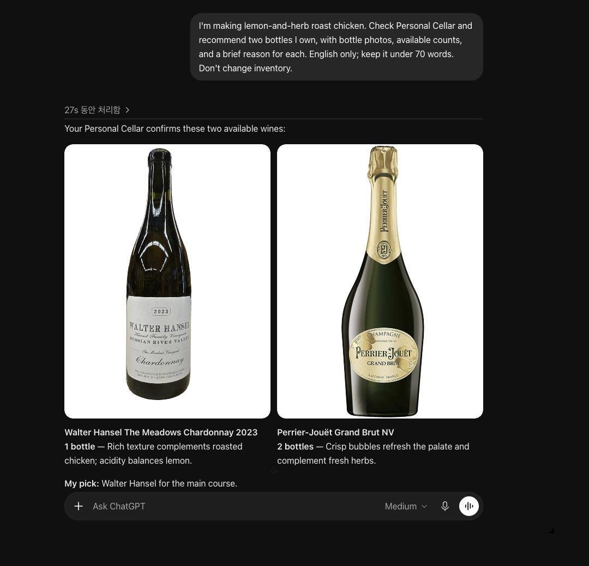

Cellar Assistant
My collection, available to the AI tools I already use.
From a workflow to an interface
V1 packaged a Notion-based cellar workflow with instructions and small utilities for sake discovery and bottle photos. V2 adds a dedicated MCP server and a separate collection interface, while keeping existing Notion records in place. Wine and sake collections retain their own databases.
Inventory as context
Claude or ChatGPT can query the collection, compare a possible purchase with current stock, and reason about food pairings. The server supplies recorded bottle facts and explicit preferences; the connected AI client provides the reasoning. Live prices and availability require separate external evidence.
Adding a bottle or recording consumption follows a prepare, review, and commit workflow. Persistent operation IDs make retries traceable and prevent a repeated successful request from adding duplicate bottles. Uncertain writes remain blocked for reconciliation.
I built the storage adapters, MCP tools, persistent write journal, recovery checks, and local web interface. Notion separates product records from physical bottles, and SQLite provides a local storage option. The UI and connected AI clients use the same storage layer.
A real conversation in ChatGPT
I connected Personal Cellar to my own ChatGPT account through MCP. In this example, ChatGPT checks my live inventory and recommends bottles for lemon-and-herb roast chicken, with pairing notes and product photos in the conversation.

Current scope
The MCP connection and real Notion inventory have been exercised with a personal collection. The interface supports browsing, photos, registration, and consumption records. An embedded AI conversation is not yet implemented; recommendations currently happen in the connected AI client. The conversation shown here was captured from a real MCP session; this portfolio page itself has no access to my live cellar.